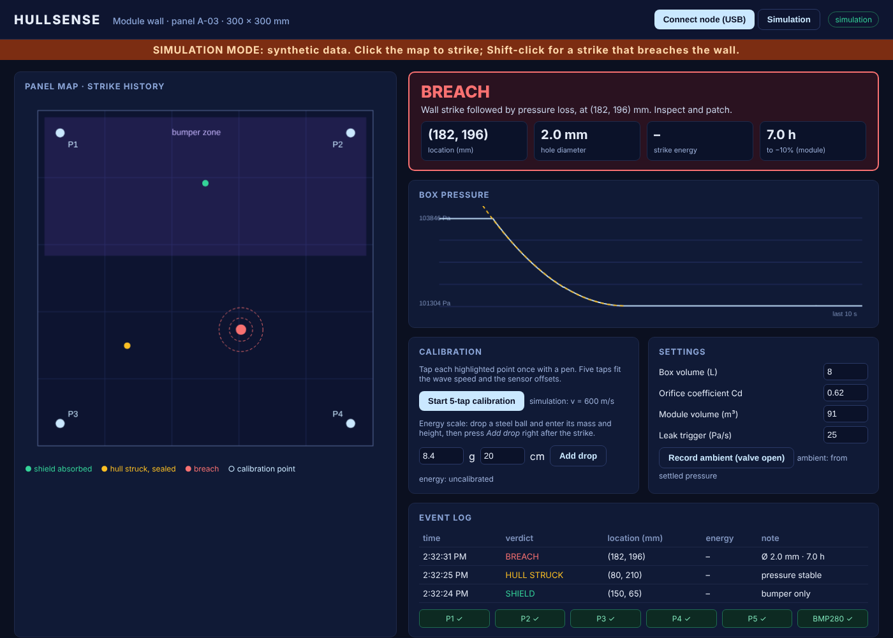

PROBLEM STATEMENT TITLE (for registration and slide 1)
Real-time strike localisation and breach sizing for crewed-module walls: from "something hit us" to "hole here, this big, this much time" in seconds
Short version, if the form limits length: "Real-time debris-strike localisation and breach sizing for Gaganyaan-class crewed module walls"
Crewed modules get struck by micrometeoroids and debris. Today, finding out where a strike hit, whether it breached the pressure wall, and how bad the leak is takes hours to months.
| System | What it does | What it can't do |
|---|---|---|
| NASA DIDS (Distributed Impact Detection System), ISS / BEAM module | Piezo accelerometers on the wall detect impacts | Telling whether the strike breached the wall needs "separate analysis"; it does not size leaks |
| NASA HDU piezo-polymer test (2010) | Detected 147/147 impacts and located each within 8 cm | Localisation only, using lab-grade data acquisition |
| Honeywell depressurisation analyser (US 6,885,967) | Estimates hole size and time-to-critical-pressure from dP/dt and compartment volume | Says only which compartment is leaking, not where on the wall |
| Industrial acoustic-emission sensors | Lab-grade impact sensing | ₹21k–₹3.4 lakh per sensor (Robu.in listings) |
| Hobby tap-locators (TapTDOA, MIT knock tracking) | Locate a finger tap | No shield/hull distinction, no energy estimate, no breach logic |
"DIDS tells you something hit. Depressurisation analysers tell you how big the hole is, but only by compartment. HULLSENSE joins both at panel level. It times the strike on the bumper and the pressure wall, decides whether the shield absorbed it or the hull was hit, and sizes any resulting breach from the pressure decay. It self-calibrates from five taps and costs under ₹1,500."
The wall panel is the airtight lid of an ~8 L box, kept at ~1.5 kPa above room pressure through a tyre valve. Three drilled holes of 1, 2 and 3 mm are sealed with aluminium-foil patches. When a punch strike pierces a patch, air escapes through a real hole of known size.
| Item | Qty | ₹ each | ₹ | Source / status |
|---|---|---|---|---|
| ESP32 30-pin CP2102 dev board | 1 | 499 | 499 | Probots, checked 6 Oct |
| 27 mm piezo disc (5 used + 1 spare) | 6 | 20 | 120 | Probots, checked 6 Oct |
| LM324 quad op-amp (band-pass ×5) | 2 | 15 | 30 | Ritchie St, estimate |
| LM339 quad comparator (×5) | 2 | 15 | 30 | Ritchie St, estimate |
| Resistors, caps, 1N4148 clamps, 5 trimpots, perfboard, headers | lot | — | 100 | Ritchie St, estimate |
| BMP280 module (GY-BMP280) | 1 | 150 | 150 | Ritchie St, estimate (Probots ₹299) |
| Aluminium sheet: 1 mm 300×300 wall + 0.5 mm 300×150 bumper | 1 set | — | 250 | Ritchie St / hardware shop, estimate |
| Plastic storage container, ~8 L | 1 | 100 | 100 | Local, estimate |
| M-seal epoxy putty (lid seal, cable pass-through) | 1 | 60 | 60 | Local, estimate |
| Fevikwik (bonding the piezos) | 2 | 10 | 20 | Local, estimate |
| Tubeless tyre valve stem | 1 | 40 | 40 | Cycle shop, estimate |
| M3 standoffs, screws, rubber feet | set | — | 50 | Ritchie St, estimate |
| Steel balls (calibration drops) | set | — | 30 | Cycle shop, estimate |
| Total | ₹1,479 | Under the cap by ₹21 |
| Time | What judges see |
|---|---|
| 0:00 | "In 2020 the ISS crew found a leak with tea leaves. Last year Shenzhou-20 was hit and nobody knew when. We built the instrument that answers where, whether and how bad in seconds." The panel and an empty dashboard. |
| 0:30 | Judge drops a steel ball on the bumper. A dot appears and the banner turns GREEN · shield absorbed · 4 mJ, read out aloud. |
| 1:00 | Blind accuracy test. The judge sticks a sticker anywhere on the bare wall and taps it with a pen. A dot appears. We measure the miss with a ruler while they watch, and a running error figure (e.g., "median 1.8 cm over 12 hits") updates. |
| 1:45 | The wow. The judge picks one of three foil-sealed ports and strikes it with a centre punch. The banner reads HULL STRIKE, then within about 2 s BREACH · (x, y) · Ø 2.1 mm. The pressure curve and the model fit appear live. We reveal the drilled size: 2.0 mm. |
| 2:30 | The flight-scaled readout: "on a BAS-class module, this hole leaves the crew N minutes before the pressure threshold". Then the impact heatmap. Close: one node per wall panel, the same skin on a launch vehicle or gondola structure. |
| When | Experiment | Pass | If it fails |
|---|---|---|---|
| 7 Oct | Buy everything at Ritchie Street (same day). Glue 4 piezos to the 1 mm plate. | All parts in hand | Order the remaining parts from Probots (1–3 days) |
| 8 Oct | Timing chain: band-pass → comparator → MCPWM capture on 4 channels | 20 taps on one spot give arrival-time differences with standard deviation < 5 µs; a soft tap and a 30 cm ball drop on the same spot differ by < 15 µs | Add amplitude-bias correction; if still failing, use fingerprint (k-NN) localisation |
| 9–10 Oct | Blind accuracy: calibrate from 5 taps, then hit a 25-point grid including edges | Median error ≤ 2.5 cm, 90th percentile ≤ 5 cm, ≥ 95% of hits register on all 4 channels | Limit the "valid zone" to the inner 200×200 mm and cover it with the fingerprint grid |
| 10 Oct | Sealed box: M-seal the lid, pressurise to 1.5 kPa | Background leak < 5 Pa/s; 1 / 2 / 3 mm ports sized within ±15% | Re-seal; fall back to a smaller sealed box under part of the panel only |
| 11 Oct | Hall-noise soak in a real classroom | No false events in 10 min of footsteps, clapping and table thumps; bumper/wall triage correct 20/20 | Tighten the coincidence gate, add foam isolation; drop the energy claim if it isn't monotonic |
| Person | Owns |
|---|---|
| A · Analog + mechanical | Five front-end channels on perfboard, bumper standoffs, sealed box, breach patches, spare patches |
| B · Firmware | MCPWM capture on both edges, coincidence gate and hold-off, BMP280 at ~100 Hz, JSON over USB |
| C · Algorithms | Calibration, TDOA solver, energy fit, leak ODE fit, flight scaling (prototype in Python on 8 Oct, port to JS) |
| D · Dashboard + pitch | Web Serial UI (panel map, verdict banner, pressure plot, heatmap, speech alert), slides, demo script, Q&A rehearsal |
Timeline: 0–6 h integrate the pre-built pieces · 6–12 h calibrate and test triage · 12–18 h breach loop + dashboard polish · 18–21 h full rehearsals with error logging · 21–24 h slides, sleep, buffer. Fallback ladder: exact localisation → k-NN fingerprint → zone classifier. The breach loop is independent of these, so if localisation drops to zone level the demo still holds.
Firmware (firmware/hullsense_node): Arduino-ESP32 3.x sketch. Five MCPWM capture channels timestamp comparator edges at 12.5 ns; edges within 2 ms form one strike event; a 30 ms hold-off ignores ringing; the BMP280 streams box pressure at about 100 samples per second; a heartbeat reports per-channel edge counts so a dead sensor shows up as a fault. Builds for the ESP32 Dev Module with Arduino-ESP32 3.0.7 (317 KB flash, 21 KB RAM).
Dashboard (open it here): runs in Chrome or Edge and talks to the node over Web Serial. It runs the 5-tap calibration, locates strikes by least squares on the arrival times, decides the verdict, fits the pressure decay for the hole diameter and scales it to a station-class module. A clearly labelled simulation mode lets anyone try it without hardware.

Dashboard running in simulation mode (synthetic strikes). The solver test suite in tests/ checks calibration, localisation and hole sizing against simulated data.
| They'll ask | Your answer |
|---|---|
| "A tap isn't a 7 km/s hypervelocity impact." | Agreed. Never claim it is. This is a ground-test analogue that proves the localisation, triage and breach-sizing chain. Real hypervelocity impacts produce stronger, higher-frequency waves, which are easier to time. Validating with hypervelocity tests is future scope. |
| "Wave speed depends on frequency, and the comparator fires earlier on hard hits. How does error grow with drop height?" | Show the measured soft-vs-hard bias from 8 Oct and the band-pass plus amplitude correction that fixes it. |
| "Isn't this just TapTDOA / DIDS?" | We credit both. Our contribution: two-layer triage, strike-to-breach fusion with hole sizing, 12.5 ns hardware timestamps with no fast ADC, and self-calibration. |
| "Real modules are curved and ribbed." | Per-panel calibration, with the fingerprint map as a fallback that learns any geometry. Ribs are future scope. |
| "Your hole-size estimate depends on Cd." | The diameter goes as √Cd, so Cd anywhere from 0.60 to 0.70 changes it by only −2% to +6%. Then show the live check against the drilled size. |
| "Footsteps and crowd noise?" | The 1 ms four-channel coincidence gate plus a residual cut-off. Show the false-event count from the 11 Oct soak. |
Physics numbers (decay times, Cd sensitivity, flight scaling) were computed for this brief. Accuracy targets are goals until the 8–11 Oct bench tests. Put only measured numbers on slide 4.